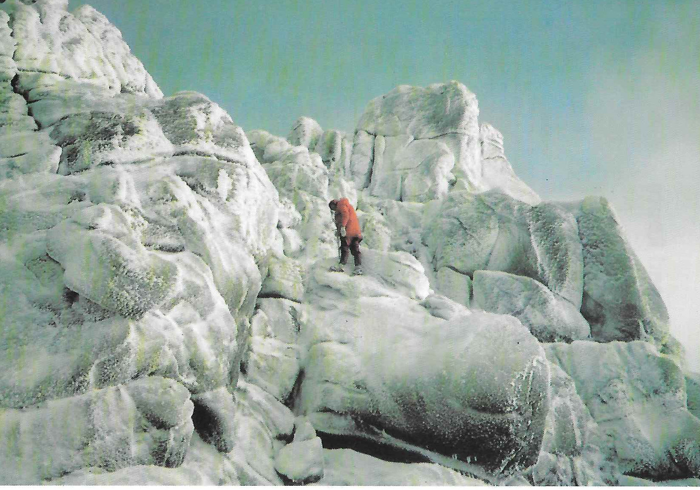

Prince Charlie’s Castle Tramp
by Dave Kime
The idea was dreamed up in Culra Bothy on a dark November night. The parents-in-law were in New Zealand and had taken to backpacking and bothying. Soon they were to retire, so what better than a short backpacking trip for them around the Scottish Highlands? What evolved was a 200 mile trek through the glens, linked with some stretches of imagination to the stravaigings of Bonnie Prince Charlie. There was perhaps even more of a link with the wanderings of the CMC and these came to mind from time to time as we acted as support party for the walk.
The Tramp started at the Prince’s Cairn on Loch nan Uamh whence it is but a short sail to the Isles. The Cuillin of Rhum, visible from the hills between here and Lochailort Hotel, brought to mind the climbs and scrambles on that ridge, of nights in Dibidil Bothy, of bivvies on Allival watching the sunset and the flying bunnies returning to their nests after a day’s fishing and of a descent from Orval in thick cloud down a steep gully with Andy and myself leading only ten feet apart and our compasses pointing in opposite directions. The Tramp continued now across wild country to Oban Bothy on Morar where the isolation became apparent when a maternal shoulder was dislocated crossing a swollen burn and we evacuated by Glen Pean.
The Bothy here was now deserted, unlike our visit late one December when our sleep had then been disturbed at 3 am. Morning revealed two bodies upstairs and two crates of whisky downstairs and by evening, crowds were appearing through the blizzard from all directions and the wall was stacked high with whisky, beer, turkeys and more. St. Andrews University MC were celebrating New Year here in true Scottish style, including a midnight swim in the burn by the President who’ll suggest at the next AGM that we adopt this tradition? Undeterred, we started to cook the curry in a quiet corner, until a snowman appeared and asked if there was anyone from Sheffield with a ginger beard. Our friends had gone to A’Chuill Bothy, he informed us. A moonlit walk with a half-cooked curry took us in a few miles to this darkened Bothy where at 8 pm we awoke Andy and Rosy and two strangers, lit some candles and continued cooking the meal. Mice rats? nibbled at the left overs while we slept.
We passed above A’Chuill again the following year as we continued the next stage of the Tramp, across to Kinbreak Bothy and then to a camp in Glen Loyne where the river rose three feet in the night. Decadence and the Cluanie Inn. Cluanie, land of the Five Sisters, the Seven Brothers, the Three Uncles, the Two Grannies and the South Cluanie Ridge, where in years gone by Rosy had drunk a stream dry and Drew had tested a home made tent almost to destruction.
The route now took us on through Glen Affric, where we had once spent an Easter of hot sun and melting snow and saw no-one for a week, and where we ticked off Bens Chrysanthemum and Sod-All where the Youth Hostel was left open and unlocked and was inaccessible by car. On to Fort Augustus and Loch Ness with not a tick in sight and then the General’s Road over the Corrieyairack Pass where mother in law broke a foot in steep snow and hopped three miles to the camp at Melgarve. Blue skies now over Creag Meagaidh, where a decade ago we had walked in a circle in a blizzard while the rest of the Club played hide-and-seek on Carn Mor Dearg, tempted by Mike’s slides of perfect weather on the previous year’s Glen Roy meet.
The Tramp continued again the next year, but after two mishaps I left Jenny to act as support on her own. For mother-in-law to be injured once might be a misfortune, twice might be carelessness, but three times…! And so past Garva Bridge from which we had skied up the Monadhliaths, but now on to Pattack and Culra Bothies. No time to call at Ben Alder Cottage where the Club had kept the evil spirits at bay by liberal use of the more benign malted type. Loch Ossian and its rail access hostel, Loch Treig and on to Meanach Bothy. Fourteen years previously, we had used it before the Mountain Bothies Association had fitted windows and doors. Straw beds and clear skies with a million stars through the open window at night, sun, snow and ice on the Grey Coires by day.
Beyond were the Aonachs and memories of setting off one clear October day from Glen Roy, stoked by egg and bacon served in bed in a frozen tent at 6 am, Al and Kate ahead driving erratically as they spotted birds at dawn and from the summit, distant views of all the Highlands. Cool enough for us but still too hot for Jimmy to put a shirt on. Back in Sheffield two days later, Mike’s tent was still frozen, but his throat was still hot from the vindaloo curry and gluwein which I had served at the end of the previous day. The Tramp took us on past Binneins Mor and Beag and the lochan between where the Club once swam one wet day in July. So on to Mamore Lodge, a friendly place for mountain folk - what a change from many years ago when an innocent new member took up an offer to join Mike Munrotic for a walk in the Mamores. The alarm went at 6 am when Mike’s ample rear end hit the floor at Lagangarbh after a direct descent from the top bunk. At 7.30 we drove up the private road past the Lodge and were soon afterwards on the first Top, Am Bodach. By eleven the Gearanachs & Garbhanachs were done, three more ticks, and there was just “that little conical job over there” to do to complete Section Four. No messing about over Na Gruagaichean and Binnein Mor for Mike: the direct route by a three mile traverse across the rough heathery coire to Binnein Beag, but rewarded by the sight of red deer in their thousands . Last tick of the Section and back to the car. Two flat tyres but Good Scout Mike was prepared with a hand pump and we were off towards the Lodge.
“Daddy, Daddy, they’re coming!”
There followed a short legal discussion on the law of trespass in Scotland from my solicitor to the local keeper whose response sounded remarkably like “Bugger Off”. The welcome is now of a better type, but with all rooms taken we camped by the pond and ate and drank in the bar. The tourist route of the West Highland Way passes here and we followed it now before leaving the ant-trail to cross to Corran ferry.
Across in Ardgour, Glen Scaddle led to Resourie Bothy where one Christmas the two of us collected so much wood in just an hour that we spent the whole evening trying in vain to burn it all. Beyond is Ben Resipol where one New Year a Castle group inched on their stomachs towards the summit, precariously anchored by their axes in a blizzard with ferocious winds. We failed and evacuated by the nearest gully which led to the bogs by Loch Shiel. Next day the tabloids screamed “Gales Lash Britain” and a neighbour later said:
“Yes, it was a bit windy, our dustbin lid blew off.”
Warned of the bogs, the two pensioners completed the Tramp by first rowing six miles down Loch Shiel to the new Hothersall Bothy at Langal for the night and then another two to Acharacle before the path to their final bothy at Druimnich, where a number of the Club have been conned into transporting large chunks of oak and birch, seemingly for miles across hills and bogs, to keep the winter fires burning.
When there’s nothing left to tick and the last table of the Scottish hundred footers has been put away, you can always invent a walk though the glens to see you into your Seventies. Castle memories await you there.

Figure 1: Summit of Ben Avon Cairngorms